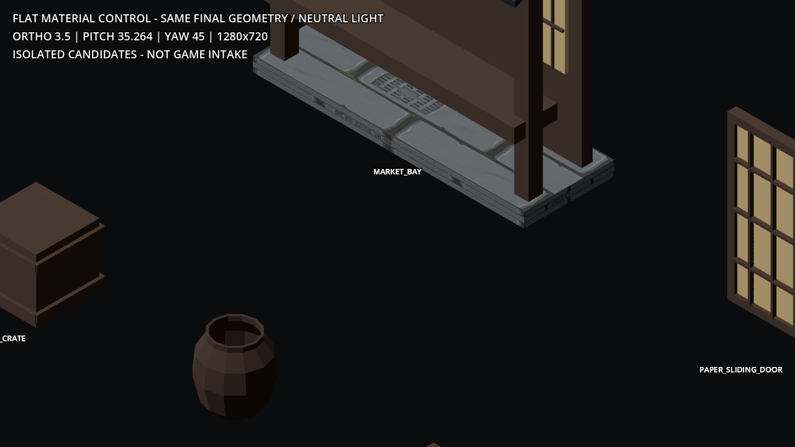
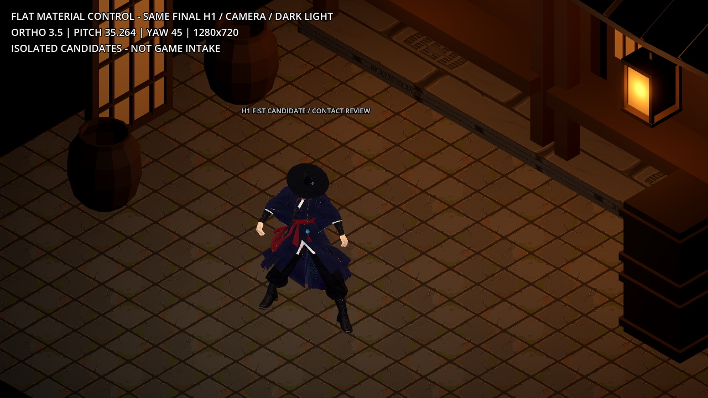
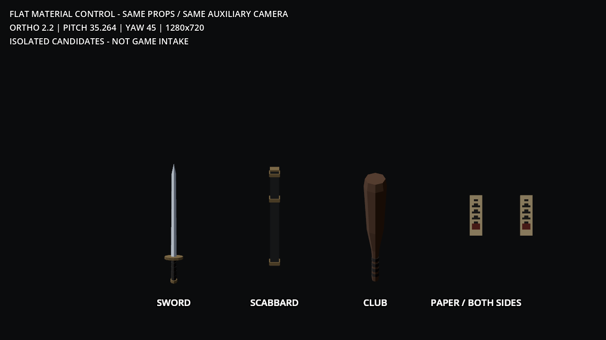
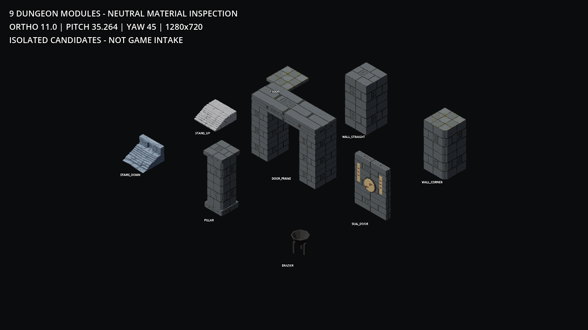
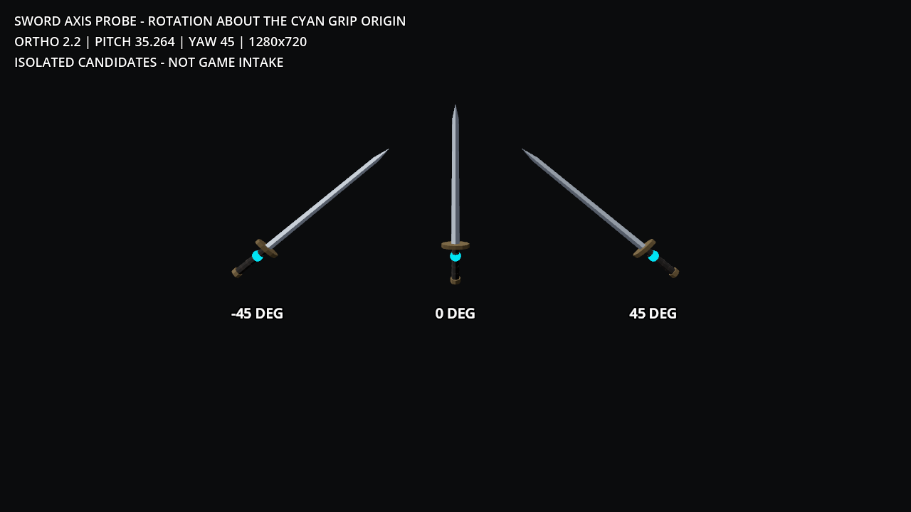

H1 STYLE EXPANSION / LOCAL 3D CANDIDATES
환경 14종 + 분리 소품 4종
실제 GLB 18개와 Godot 검수 렌더. 현재 게임의 돌 텍스처와 H1의 큰 무광 형태를 연결한 후보입니다. 그림으로 만든 조감도가 아니라, 아래 GLB를 독립 씬에서 렌더했습니다.
상세 설명 · QA 보고서 · 전체 목록 · H1 소켓 값
게임 반입 전 후보입니다. 목재·기와·회벽·한지에 TEX01 재질을 적용했으며, 옹기·부적은 단색 후보입니다. 아틀라스는 실제 1254²로 1K 규격 합격이 아니며 원화의 표면 완성도에 도달했다고 보증하지 않습니다. 충돌·길찾기·게임플레이는 미검증입니다. 환경은 실제 카메라 ortho 11, 소품·손아귀는 표시된 확대 카메라로 확인하세요.
환경 조합
 03_dungeon_assembly · ortho 11.0
03_dungeon_assembly · ortho 11.0 02_town_assembly · ortho 11.0
02_town_assembly · ortho 11.0단색 → TEX01 재질 비교

12_town_catalog_flat_control · ortho 3.5 01b_town_catalog · ortho 11.0
01b_town_catalog · ortho 11.0
13_town_assembly_flat_control · ortho 3.502_town_assembly · ortho 11.0
14_props_catalog_flat_control · ortho 2.2 07_props_catalog · ortho 2.2
07_props_catalog · ortho 2.2카탈로그

01_dungeon_catalog · ortho 11.001b_town_catalog · ortho 11.007_props_catalog · ortho 2.2
08_sword_angles · ortho 2.2